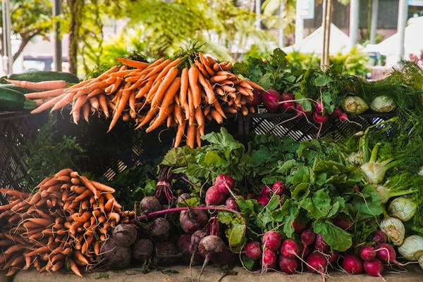
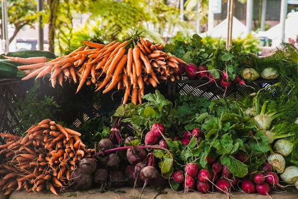
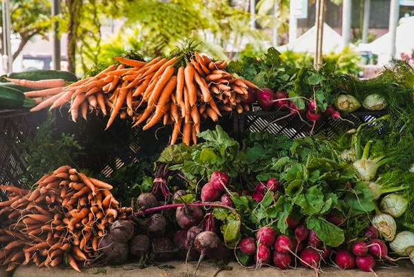

Sustainable living refers to the practice of reducing one’s environmental impact by making
mindful choices that conserve resources and minimize waste.
It involves integrating practices into everyday life that promote ecological balance,
social equity, and economic viability.
Conservation of Resources: Simple changes like reducing water usage and
utilizing energy-efficient appliances can have a significant positive impact.
Waste Reduction: Practicing the 3Rs—Reduce, Reuse, and Recycle—can
minimize waste generation.
Sustainable Transportation: Opting for public transport, cycling,
or walking reduces greenhouse gas emissions.
Supporting Local: Buying locally sourced food supports the community's
economy and reduces carbon footprint.
Green Technologies
Advancements in technology play a crucial role in promoting sustainability.
Green technologies help mitigate environmental impacts while enhancing efficiency.
Solar Energy: Solar panels convert sunlight into electricity,
providing a renewable energy source.
Energy-Efficient Appliances: Products designed to use less
energy and water save money and reduce demand on natural resources.
Smart Home Technology: Systems that monitor and optimize
energy usage help consumers reduce their environmental impact.
Waste-to-Energy Technologies: Innovations that convert
waste into energy reduce landfill use while providing alternative energy sources.
Upcoming Events
Stay connected with our community by participating in our upcoming events!
Sustainability Workshops: Hands-on workshops covering various topics.
Community Clean-Up Days: Local clean-up efforts to beautify neighborhoods.
Green Fairs: Discover eco-friendly products and learn about sustainable practices.
Guest Speaker Series: Enjoy presentations from sustainability experts.
Latest News
Stay updated with the latest news and developments in sustainability!
Our newsletter features articles, tips, and resources to help you stay informed about:
New sustainable practices
Changes in local environmental policies
Success stories from community members
Innovations in green technologies
Featured Story
Meet Sarah, a local farmer who transformed her conventional farm into a model of sustainable agriculture.
By implementing permaculture principles and utilizing organic farming methods,
Sarah increased her yield while improving soil health and biodiversity.
Read her story to discover the changes she made and the challenges she faced.
Explore Our Images

Who We Are
At Seed to Society, we are a passionate collective dedicated to fostering sustainable agricultural practices
and building resilient communities. Our mission is to empower individuals with the knowledge and resources
they need to grow their own food, engage in environmentally friendly farming, and connect with one another to
share ideas and best practices. We envision a world where everyone has access to fresh, locally sourced produce,
and where sustainable methods are the norm rather than the exception. Through workshops, community events, and
educational resources, we strive to create a vibrant network of farmers, gardeners, and advocates who prioritize
health, sustainability, and community well-being. By promoting organic farming techniques and supporting local
farmers, we aim to enhance food security, encourage biodiversity, and protect our natural resources for future
generations. Join us on this journey as we work together to cultivate a more sustainable and connected society.
Our Mission
Our mission is to create a sustainable future through innovative solutions, community engagement, and education. We strive to inspire positive change in how communities approach sustainability. Our commitment to fostering an environment where sustainable practices can thrive is at the heart of everything we do.
Our Team
Our team comprises passionate individuals from diverse backgrounds, including environmental science, agriculture, community development, and education. Together, we work tirelessly to support our mission and make a meaningful impact in the communities we serve.
Sustainability Commitment
We are committed to sustainability in all our operations. This includes minimizing waste, using eco-friendly materials, and fostering a culture of sustainability within our organization. Our sustainability practices guide our work, ensuring that we lead by example in the communities we serve.
Partnerships
We believe in the power of collaboration. Our partnerships with local organizations, businesses, and government
entities enhance our impact and extend our reach. By working together, we can tackle sustainability challenges
more effectively and create lasting change.
Our Purpose
At Seed to Society, our purpose is to empower individuals and communities through sustainable farming practices.
We aim to inspire a new generation of eco-conscious citizens who understand the value of nurturing the land
and cultivating relationships. By providing educational resources and hands-on experiences, we strive to
make sustainable agriculture accessible to everyone, fostering a culture of growth, resilience,
and community well-being.
Our Future
We envision a world where sustainable farming is woven into the fabric of everyday life, creating thriving
communities that prioritize health, well-being, and environmental stewardship. Our future is one where local
farms flourish, biodiversity is celebrated, and every individual has access to fresh, nutritious food.
Together, we are building a movement that transcends boundaries, connecting people and nurturing the earth
for generations to come.
Our Core Values
Sustainability: We believe in practices that protect and enhance our environment for future generations.
Community: We value the strength that comes from collaboration, fostering connections among individuals and organizations.
Education: We are committed to sharing knowledge and resources to empower others in their journey toward sustainable living.
Integrity: We uphold honesty and transparency in our actions, ensuring that our practices align with our mission.
Inclusivity: We celebrate diversity and strive to create an inclusive space where everyone feels welcome and valued.
Our Services
We offer a range of services designed to help individuals and organizations implement sustainable practices effectively.
Consulting Services: Tailored advice to improve sustainability practices.
Tailored Sustainability Plans: Customized plans to meet specific goals.
Mentorship Programs: Guidance and support for sustainable projects.
Online Courses: Educational courses on various sustainability topics.
Seed Bank Access: Resources for sustainable farming.
Farm Tours: Hands-on learning experiences.
One-on-One Sessions: Personalized consultations.
Service Images
Consulting Services
Our Consulting Services provide expert guidance to help you navigate the complex world of sustainable agriculture.
Whether you are a beginner looking to start your own garden or an experienced farmer seeking to enhance your practices,
our consultants will work with you to develop tailored strategies that fit your specific needs.
We focus on practical solutions that ensure long-term sustainability and productivity in your farming operations.
Tailored Sustainability Plans
Tailored Sustainability Plans are designed to help individuals and organizations implement eco-friendly practices that
are both effective and efficient.
We assess your current operations and develop a customized plan that addresses your unique challenges and goals.
Our plans cover everything from resource management to waste reduction,
ensuring that you can achieve your sustainability objectives while also maximizing your impact on the environment.
Mentorship Programs
Our Mentorship Programs connect aspiring farmers and environmental enthusiasts with experienced mentors in the field.
Participants receive one-on-one guidance, practical skills training, and ongoing support to foster their growth and
development. This program is perfect for those looking to deepen their knowledge of sustainable practices,
learn new techniques, and build a network within the agricultural community.
Online Courses
Our Online Courses offer a flexible learning environment where you can gain essential knowledge about sustainable
agriculture at your own pace. From introductory courses on organic farming to advanced workshops on permaculture design,
our curriculum is designed for all skill levels. Each course is crafted by industry experts and includes
interactive materials, videos, and assessments to ensure a comprehensive learning experience.
Seed Bank Access
Gain access to our Seed Bank, a valuable resource for both novice and experienced gardeners.
Our Seed Bank offers a diverse collection of heirloom and organic seeds that are well-suited for sustainable farming.
By utilizing these seeds, you not only preserve biodiversity but also contribute to the cultivation of crops that thrive
in local climates.
Join us in promoting seed sovereignty and agricultural resilience.
Farm Tours
Experience sustainable agriculture firsthand through our Farm Tours. These guided visits allow you to explore various
farming practices in action, witness innovative techniques, and interact with the farmers themselves.
Each tour is designed to educate and inspire, showcasing successful models of sustainability that you can adapt to your own practices.
Whether you are an educator, student, or simply curious, our tours offer a unique glimpse into the world of sustainable farming.
One-on-One Sessions
Our One-on-One Sessions provide personalized attention to address your specific agricultural challenges and goals.
Whether you need expert advice on pest management, soil health, or crop selection, our experienced professionals are here to help.
These sessions are tailored to your individual needs, ensuring that you leave with actionable insights
and a clearer path forward in your sustainable farming journey.
Workshops
Join our sustainability and farming workshops to learn the best practices.
Our Workshops cover various topics including organic gardening, permaculture and
sustainable farming techniques.Participants will gain hands on
experience and knowledge needed to implement practices in their graden.
These interactive sessions are designed to empower individuals and communities to
adopt greener lifestyles through practical learning and shared experiences.
Participate in our community seed exchange to diversify your crops.
Our seed exchange events allow community members to share and acquire a variety of seeds.
This initiative promotes biodiversity and encourages the cultivation of local varieties.
By participating, you contribute to a thriving ecosystem and foster connections within your
community, all while enhancing your own gardening practices.
We offer consultations for community gardens and sustainable living.
Our consulting services help communities develop sustainable gardens.
We provide tailored advice based on your specific needs and goals, ensuring your garden thrives sustainably.
Our team of experts will guide you through best practices and innovative techniques to create an
environmentally friendly space that benefits both you and your community.
Sustainable farming is not merely a trend; it is a comprehensive approach to agriculture that considers
the long-term impacts of farming practices on the environment, society, and the economy.
This methodology prioritizes ecological balance by integrating practices such as crop rotation,
organic farming, and agroforestry...
By focusing on biodiversity, farmers can maintain healthier soil,
reduce pest outbreaks, and ultimately increase their yields sustainably. Moreover, sustainable farming
techniques often emphasize the importance of local ecosystems, promoting practices that work in harmony
with nature rather than against it.
In this blog, we will explore various sustainable farming techniques, their benefits,
and the ways they can be implemented in various agricultural settings.
We will also share success stories from farmers who have made the transition to sustainable practices
and the positive impact it has had on their communities and the environment. These insights will empower
you to consider how sustainable methods can enhance your own farming practices or local agricultural
policies.
Community Success Stories
Success in sustainability often begins at the community level.
Across the globe, numerous communities have come together to implement sustainable practices that not
only benefit the environment but also strengthen social bonds and enhance economic resilience.
From urban gardens to cooperative farms, these initiatives demonstrate the power of collective action in
tackling environmental challenges.
This blog will showcase various case studies highlighting successful community-led sustainability projects.
You will learn about the innovative approaches taken by these communities, the challenges they faced, and
the solutions they devised. Additionally, we will discuss the role of local governance and community
organizations in supporting these initiatives, providing a roadmap for others looking to follow in their
footsteps.
Environmental Research
Staying informed about environmental research is vital for understanding the complexities of our planet's
ecosystems and the impacts of human activity. Recent studies have shed light on pressing issues such as climate
change, habitat loss, and biodiversity decline. This blog will delve into the findings of various research
initiatives and their implications for sustainability practices.
We will examine cutting-edge research from universities and organizations worldwide, discussing how this
knowledge can inform policy decisions and influence individual actions. By synthesizing these findings,
we aim to equip our readers with the information needed to make informed choices that contribute to
environmental sustainability.
How-to Guides
Are you looking to adopt more sustainable practices in your daily life? Our comprehensive how-to guides
are designed to provide practical, actionable steps that anyone can take. From reducing waste to conserving
energy, these guides will empower you with the knowledge needed to make a positive impact on the environment.
This blog will cover a variety of topics, including composting, sustainable shopping, energy-efficient home
improvements, and more. Each guide will break down the process into easy-to-follow steps, making it accessible
to everyone, regardless of their level of experience with sustainability. By implementing these practices,
you can contribute to a healthier planet and inspire others to do the same.
Webinars and Workshops
In our commitment to fostering a culture of learning, we host a series of webinars and workshops focused on
various sustainability topics. These sessions feature expert speakers and practitioners who share their insights,
experiences, and best practices with participants. Whether you're a seasoned sustainability advocate or just
starting your journey, these events offer valuable opportunities for learning and engagement.
This blog will provide information about our upcoming webinars and workshops, including topics covered,
registration details, and links to past sessions for those who may have missed them. We encourage everyone to
participate and take advantage of these resources to enhance their understanding of sustainability and how they
can contribute to the movement.
Guest Blogs
Our platform features guest bloggers who bring diverse perspectives and expertise to the conversation around
sustainability. These contributors share their unique experiences, innovative ideas, and actionable strategies
for promoting environmental stewardship in various contexts. By highlighting the voices of those on the front
lines of sustainability efforts, we aim to foster a richer dialogue and inspire broader community engagement.
This blog will introduce our guest bloggers, provide summaries of their articles, and highlight the key
takeaways from their insights. We believe that by sharing knowledge and experiences, we can collectively drive
the change needed to create a more sustainable future.
Monthly Highlights
Each month, we compile a roundup of significant events, achievements, and initiatives from our community and
beyond. These highlights not only celebrate progress in sustainability but also keep our audience informed about
important developments in the field.
This blog will feature updates on our projects, collaborations with local organizations, and announcements of
upcoming events. We aim to create a sense of community and shared purpose by showcasing the collective efforts
toward sustainability.
Contact Us
Support
If you need assistance, you can contact our support team at support@seedtosociety.com.
For urgent issues, please call us at +254 123-456-789.
FAQs
Q: What services do you offer?
A: We offer a variety of consulting services, online courses, and mentorship programs.
Q: How can I sign up for your newsletter?
A: You can sign up through the newsletter section on our website.
Media Inquiries
For media inquiries, please reach out to media@seedtosocietycom.com.
Follow us on social media for the latest updates!
Newsletter Signup
Subscribe to our newsletter for the latest news and updates.
Enter your email below:
Feedback
Your feedback is important to us! Please send us your thoughts at feedback@seedtosocietycom.
We value your opinions and suggestions!
Careers
We are always looking for talented individuals, passionate individuals to join our growing team.
Explore opportunities and build a rewarding career with us.
 
